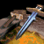

RM Brawl 1.1 Patch Notes
Big update to Towers , Walls and Villagers.
Towers are much better at early on allowing better and much stronger stationed defense giving all civilizations better change to get to their power spikes.
Change-logs have been updated to match patch 1.1
Check this to see what all has changed since AOE Rise of Rome 1.0a
Check this to see what all has changed since UPatch 1.1 R4
Defense update
Villagers are extremely weak making towers almost useless because of how fast the villagers died to a small raid groups. Now that villagers are more durable opting into defensive units and play styles is a valid strategy. This allows late game civilizations to be played because of how much bigger advantage the winning player needs to have to wipe out the enemy.
 Villager
Villager
Attack base melee: 4 -> 3
Reload time: 2.0 -> 1.5
 Linen Cloth
Linen Cloth
Requires: Tool Age, Leather Armor Infantry
Cost: 40 Food, 75 Wood
Research time: 30 seconds
Research location: Town Center
Effect: Villagers +10 hit points and +1 armor base melee
Akinaka
Requires: Bronze Age, Scale Armor Infantry, Linen Cloth
Cost: 140 Food, 80 Gold
Research time: 50 seconds
Research location: Town Center
Effect: Villagers +10 hit points, +2 attack base melee
 Jihad
Jihad
Villager attack bonus: 6 -> 3
Villager reload time set 1.5
Villager hit points: +40 -> +35
 Watch Tower
Watch Tower
Build time: 72 -> 80
Reload time: 1.4 -> 1.3
Stone cost: 150 -> 135
 Sentry Tower
Sentry Tower
Build time: 72 -> 80
Reload time: 1.4 -> 1.3
Stone cost: 150 -> 135
 Guard Tower
Guard Tower
Build time: 72 -> 80
Attack base pierce: 6 -> 5
Reload time: 1.4 -> 1.3
Stone cost: 150 -> 135
 Ballista Tower
Ballista Tower
Hit points: 150 -> 175
Build time: 72 -> 80
Reload time: 3.2 -> 3.0
Stone cost: 150 -> 135
 Small Wall
Small Wall
Stone cost: 5 -> 8
Armor buildings: -140 -> -190
 Medium Wall
Medium Wall
Stone cost: 5 -> 8
Armor buildings: -140 -> -160
Technology cost: 180 food, 100 stone -> 100 food, 180 stone
 Fortified Wall
Fortified Wall
Stone cost: 5 -> 8
hit points: 400 -> 625
Technology cost: 300 food, 175 stone -> 150 food, 350 stone
 cavalry line
cavalry line
Attack buildings none -> -175
Balance changes
Slingers were still performing too well. Water siege units were too expensive to be anything else than clean up unit. Scythe Chariot upgrade wasn't cheap enough to be used at mid Iron Age without massive tempo loss.
 Battle Axe
Battle Axe
Food cost: 150 -> 100
 Slinger
Slinger
Training time: 24 -> 30
Bowman
Armor Stone defense & archers: -2 -> -1
 Elephant Archer
Elephant Archer
Reload time: 1.33 -> 1.3
 Scythe Chariot upgrade
Scythe Chariot upgrade
Wood cost: 800 -> 500
Gold cost: 550 -> 350
 Siege ships
Siege ships
Wood cost: 135 -> 90
Craftmanship
New effect: Woodcutters +1 damage
Civilizations
There were still multiple unbalanced bonuses and civilizations. These changes are meant to fix rest of them.
Heavy Transport
Enabled for all civilizations Assyrian, Babylonian, Choson, Hittite, Palmyra, Shang, Sumerian
Linen Cloth, Akinaka
Available for all civilizations.
Fortification
Available Babylonian, Choson, Egyptian, Shang, Sumerian
Unavailable Assyrian, Carthaginian, Greek, Hittite, Macedonian, Minoan, Palmyra, Persian, Phoenician, Roman, Yamato
Disabled Assyrian, Greek, Hittite, Palmyra, Persian, Phoenician, Roman
Guard Tower
Available Assyrian, Babylonian, Carthaginian, Choson, Egyptian, Greek, Hittite, Palmyra, Persian, Phoenician, Sumerian
Unavailable Macedonian, Minoan, Roman, Shang, Yamato
Disabled Macedonian, Shang
Assyrian
Technologies enabled Nobility, Scythe Chariot
Babylonian
Bonus removed Priests rejuvenate 25% faster
New bonus Stone Thrower, Catapult, Heavy Catapult +30% blast radius
Technologies enabled Improved Bowman, Composite Bowman Irrigation, Coinage
Carthaginian
Bonus removed Cavalry and Heavy Cavalry +15% (+0.3) movement speed
Bonus Elephants and academy units bonus hit points +25% -> +20%
New bonus All Stable units +1 armor
Choson
Technologies enabled Chain mail, Heavy Horse Archer
Greek
New bonus Alchemy available at Bronze Age
Bonus Academy units move 30% faster -> 25% faster
Hittite
Technology enabled Fishing Ship
Technologies disabled Architecture, Iron Shield, Tower Shield, Armored Elephant, Centurion, Aristocracy
Macedonian
Technology enabled Nobility
Technologies disabled Coinage, Irrigation
Minoan
Technology enabled Bronze Shield
Palmyra
Bonus Starting food 25 -> 80
Bonus Villagers cost 75 -> 70
New bonus Town Centers cost 400 wood
Technology enabled Logistics
Technology disabled Broad Sword
Persian
Bonus Hunted animals grant 75% more food -> 60% more food
Roman
Bonus Towers cost -35% -> -40%
Technology enabled Irrigation
Shang
Bonus removed starting food -20
New Bonus Military buildings cost 33% more
Technologies disabled Craftsmanship, Helepolis
Sumerian
Bonus villager bonus hit points +11 -> +10
Bonus Stone Thrower, Catapult, Heavy Catapult fire 40% faster -> 50% faster
Technologies disabled Aristocracy, Centurion
Yamato
Technologies enabled Architecture, Irrigation, Tower Shield
Technologies disabled Aristocracy, Centurion
Bug fixes
Couple things were left unnoticed during the first gameplay test.
 Helepolis
Helepolis
Shown range 10 -> 11
Metallurgy
Scythe Chariot got +3 damage and not +1 if Metallurgy was researched after Scythe Chariot Upgrade.
 Persian Hunter
Persian Hunter
Hunting bonus worked only against Gazelles.